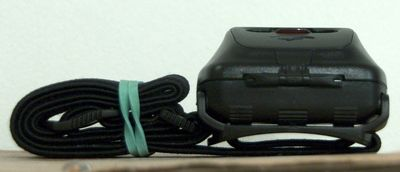
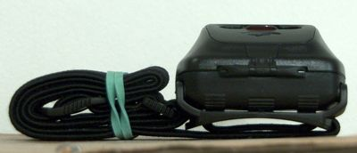

I learned long ago in a D&D game that every species that can't see in the dark really should carry a light source at all times. It took me until now to get a headlamp because I never figured out a sufficiently elegant way to carry one on my person.


The belt goes through the loop in the headband directly behind the lamp housing. Not the most convenient to get off my belt, but the best option I've come up with.
The pouches made for this seem way too bulky.
The headlamp is a Princeton Tec Tactical Quad.
(Zombie Squad thread.)
Now was that D&D game run by![[info]](http://l-stat.livejournal.com/img/userinfo.gif?v=3) kragar00 or n_tropy?
kragar00 or n_tropy?

The belt goes through the loop in the headband directly behind the lamp housing. Not the most convenient to get off my belt, but the best option I've come up with.
The pouches made for this seem way too bulky.
The headlamp is a Princeton Tec Tactical Quad.
(Zombie Squad thread.)
Now was that D&D game run by
#
still, they can provide ideers for light hacking. be visible, please :)
#
i wonder for belt storage if running it around and down the belt and then rubber banding it would work out? have to play with that.
there are days when a fully loaded gun/utility belt might be handy.
oh, fenix makes an HL01? headlamp that is small, robust (so far) and uses ONE AA batery. sweet.
otherwise, having a flashight on me is more a priority :)
#